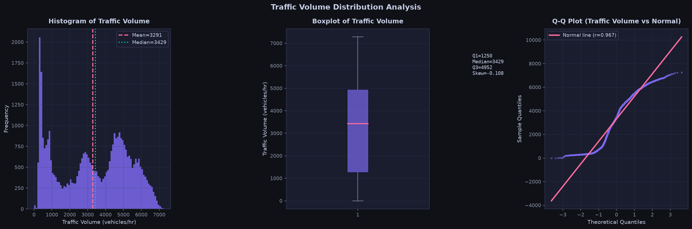
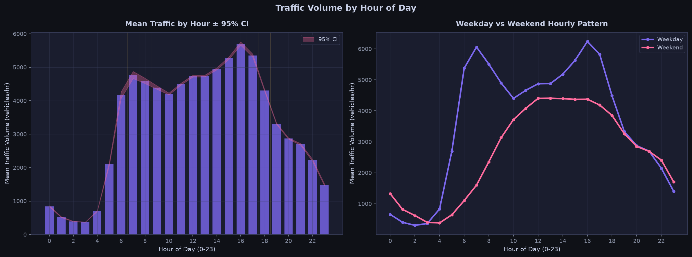
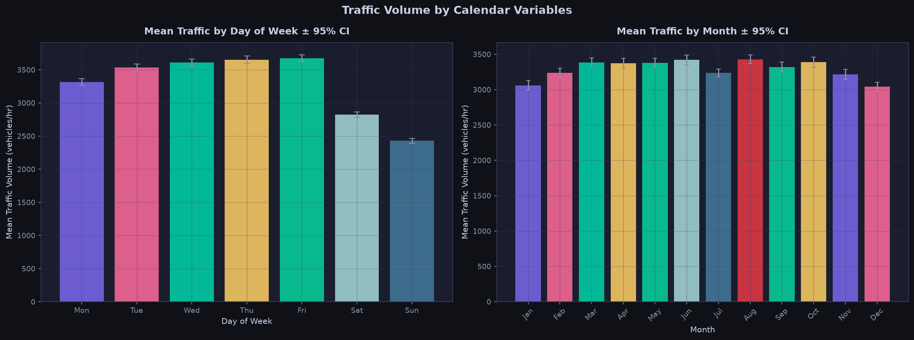
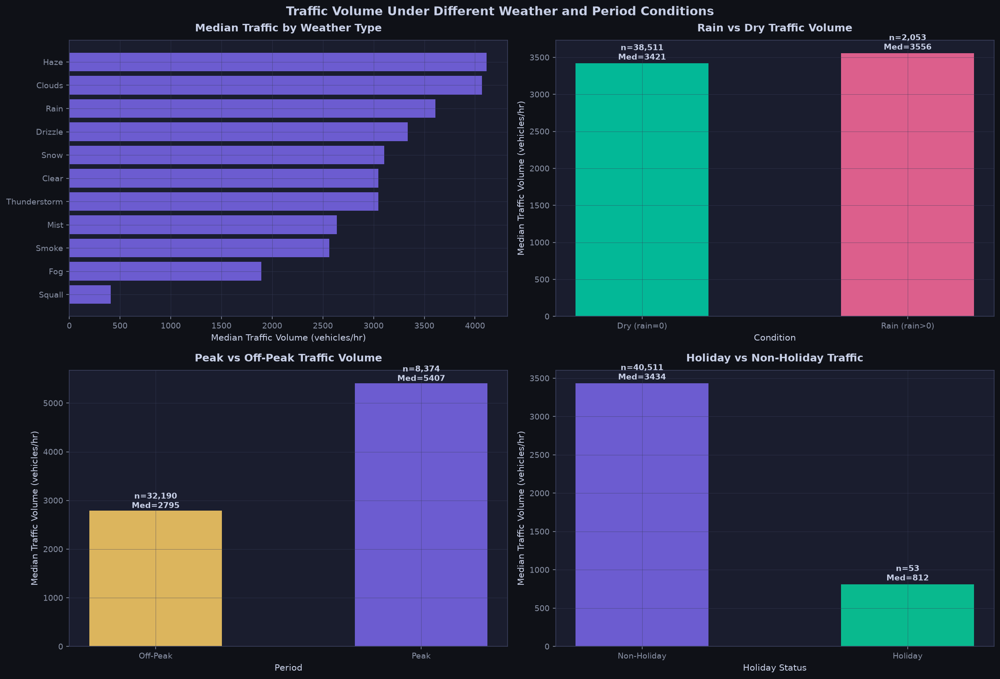
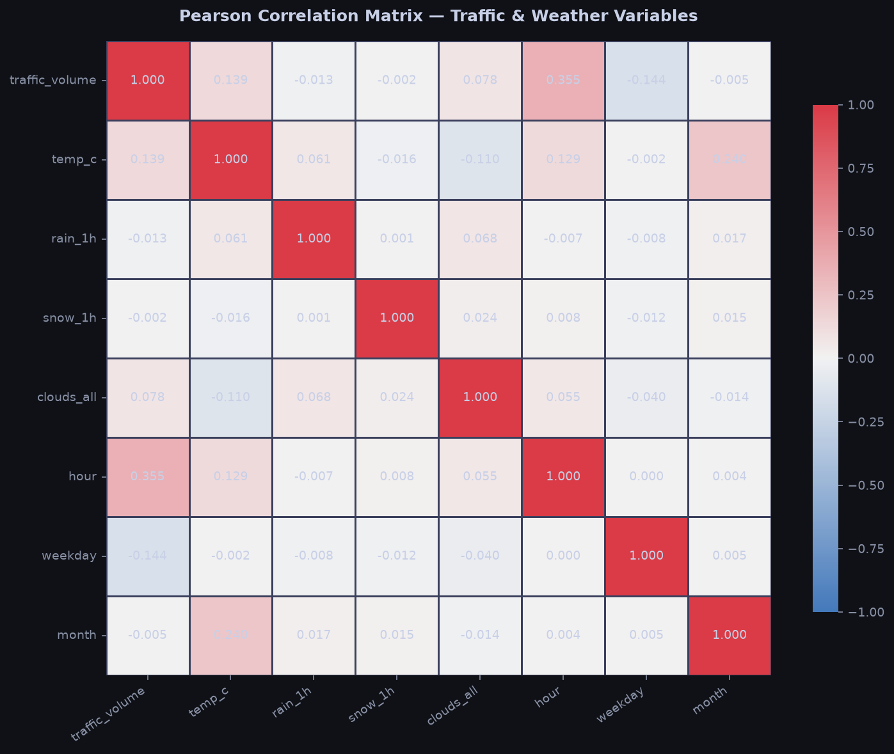
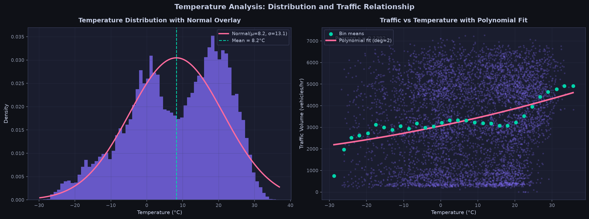
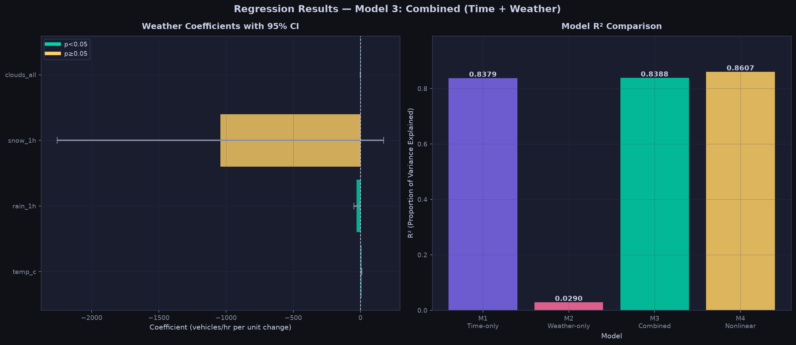
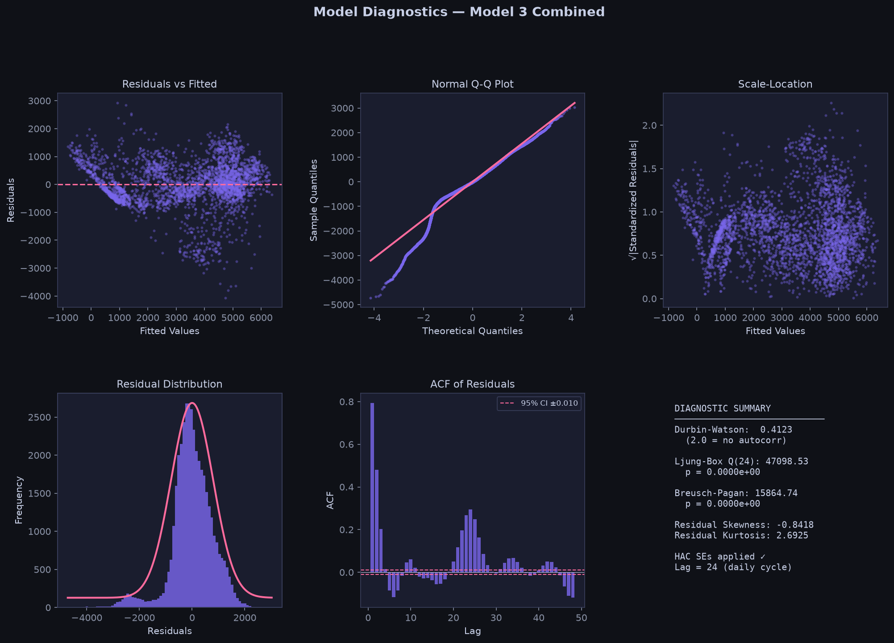

Clean Observations (n)
40,564
Deduplicated hourly series (2012–2018)
Traffic Volume Mean (x̄)
3,291.1
Median: 3,429.0 | Std: 1,984.6 veh/h
Diurnal / Calendar R²
83.79%
Dominant factor: Hour, Weekday, Month
Isolated Weather R²
2.90%
Confounded by diurnal/seasonal cycles
Incremental Weather ΔR²
+0.09%
Statistically sig (p < 10⁻⁵), practically modest
Durbin-Watson Stat
0.412
High autocorrelation → Newey-West HAC (lag=24)
Regression Model Comparison: Out-of-Sample Performance
Chronological Split (80/20)
Probability & Dispersion
Modules II & IV
| P(Rain) | 5.06% |
| P(High Traffic ≥ Q3) | 25.02% |
| P(High | Rain) | 26.89% |
| P(High | Dry) | 24.92% |
| P(High | Peak Hours) | 62.63% |
| P(High | Off-Peak) | 15.24% |
| Poisson Dispersion (Var/Mean) | 1,196.8 >> 1 |
| Poisson Verdict | Severely Overdispersed |
Syllabus Hypothesis Testing Evaluation Matrix (Modules VII & VIII)
Significance Threshold α = 0.05
| ID | Hypothesis Definition | Statistical Methodology | p-value | Effect Size / Metric | Conclusion | Statistical Defense |
|---|---|---|---|---|---|---|
| H1 | Rain vs Dry Traffic Volume difference | Mann-Whitney U (unadj) & OLS with HAC (adj) | 0.9969 (adj) | r = -0.0120 (rank biserial) | Fail to Reject H₀ | Raw difference vanishes once hour, day of week & month are controlled. |
| H2 | Traffic across Precipitation Intensity Groups | Kruskal-Wallis H & Dunn-Holm post-hoc | 0.0110 | η² = 0.0002 (negligible) | Reject H₀ | Statistically significant omnibus difference, but tiny practical magnitude. |
| H3 | Weather × Peak/Off-Peak Interaction | OLS Interaction Term (HAC Newey-West) | 1.0000 | β_interaction = -0.22 | Fail to Reject H₀ | Weather effect does not statistically differ between peak and off-peak hours. |
| H4 | Nonlinear (Polynomial) Temperature Effect | Polynomial OLS (Linear vs Quadratic vs Cubic) | 7.50 × 10⁻⁵ | β_quad = -0.1788, ΔAIC = 44.89 | Reject H₀ | Significant inverted-U curvature: traffic drops at temperature extremes. |
| H5 | Weather vs Calendar Incremental Explanatory Power | Nested Model Partial F-test (M1 vs M3) | < 10⁻¹⁰ | F = 58.73, ΔR² = 0.0009 | Reject H₀ | Weather adds statistically non-trivial power, but calendar variables dominate 83.8% of variance. |
Interactive Bayes' Theorem Risk Calculator
Module II
Calculate the posterior probability of rainy weather given observed high congestion:
P(Rain | High) = [P(High | Rain) · P(Rain)] / P(High)
Posterior P(Rain | High Congestion)
5.44%
Relative Risk: 1.08x
OLS Multiple Regression Scenario Predictor
Model 3 (Time + Weather)
Estimated Traffic Volume
4,950 veh/h
95% Prediction Interval: [4,150 – 5,750]

01 — Traffic Volume Distribution
Module I: Histogram, KDE, Mean, Median & Quantiles.

02 — Traffic by Hour of Day
Module I: Weekday vs Weekend bimodal commuter peaks.

03 — Calendar & Seasonal Variation
Module I: Day-of-week, Monthly & Seasonal distributions.

04 — Traffic Under Weather Conditions
Modules I & VII: Rain, Snow, Peak, and Holiday comparisons.

06 — Correlation Heatmap
Module IX: Pearson correlation matrix with significance levels.

08 — Temperature Curve & Polynomial Fit
Module X: H4 quadratic non-linear regression confirmation.

10 — Regression Coefficients & R² Comparison
Module X: OLS coefficients with 95% HAC confidence intervals.

Residual Diagnostics (Model 3)
Module X: Q-Q, Scale-Location, and ACF of Residuals.